ASM Instances参数介绍
原创 2017-10-18 Oracle 宅必备
这个专题讲ASM相关的内容,版本为11g
内容主要来自官方文档，加上一些自己的理解及实践
这节讲ASM Instances的参数
1. ASM及Oracle数据库版本兼容性
-
10.1版本的数据库使用11.1版本的ASM将只支持10.1 版本的ASM特性
-
11.1版本的数据库使用10.1版本的ASM将只支持10.1版本的ASM特性
兼容性的值通过COMPATIBLE 参数指定
可通过V$ASM_CLIENT 视图查看(可以在数据库端或者ASM端查询)
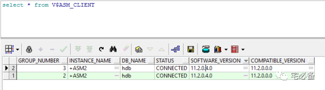
SOFTWARE_VERSION 表示ASM版本
COMPATIBLE_VERSION 表示兼容性的值
2. ASM实例参数
ASM支持pfile和spfile两种方式的参数文件，建议使用spfile形式
当ASM为集群时，各节点共享一个spfile
修改可使用alter system 命令
2.1 ASM内存管理
同Oracle数据库实例一样，ASM实例支持自动内存管理，自动SGA管理等
具体设置相应的参数 (MEMORY_TARGET ,SGA_TARGET)
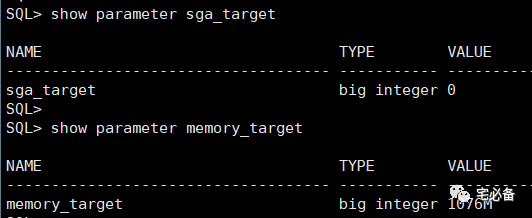
2.2 ASM 相关参数
下面说明一些ASM实例的参数
ASM_DISKGROUPS
该参数指定ASM在启动时需要挂载(mount)的磁盘组名称
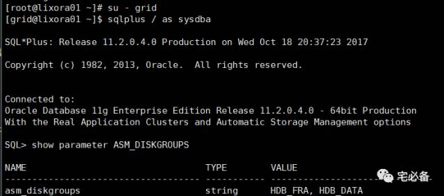
该参数为动态修改的，如果你使用spfile的话，ASM会在你增加(create,mount)或删除(drop,dismount)磁盘组时自动更新该参数
SQL> ALTER SYSTEM SET ASM_DISKGROUPS = 'CONTROLFILE, DATAFILE, LOGFILE, STANDBY'
如果使用的是pfile的话，每次需要手动更新该值
注意:ALTER DISKGROUP…ALL MOUNT 和 ALTER DISKGROUP…ALL DISMOUNT不会更新该参数
ASM_DISKSTRING
该参数的值已冒号分隔，表示ASM可以发现的磁盘的位置，请确保集群中各个节点的asm用户有权限访问该设备
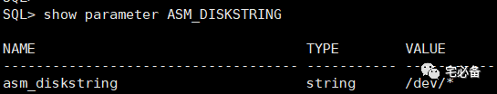
可以通过通配符进行匹配
如 /dev/rdsk/* 表示 搜索/dev/rdsk目录下的设备
默认值为null，表示搜索默认位置，该默认位置跟操作系统有关
ASM_POWER_LIMIT
该参数指定磁盘重平衡的速度，取值为1到11，默认值为1
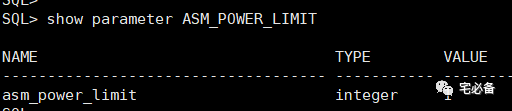
越大平衡越快，也越消耗I/O
ASM_PREFERRED_READ_FAILURE_GROUPS
我们知道normal和high 需要多个故障组，我们假设ASM集群一个磁盘组有2个故障组,A和B，分别处于不同的区域，现在A区域的数据库需要访问磁盘组的数据，如果不设置该参数则可能会读取故障组B上面的数据，这往往是我们不希望的，这时我们可以通过指定该参数来让其读取故障组A上面的数据
该参数默认值为空
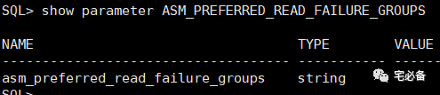
该参数只适用于集群ASM环境和Oracle RAC环境
diskgroup_name1.failure_group_name1, ...
DIAGNOSTIC_DEST
指定ASM诊断目录
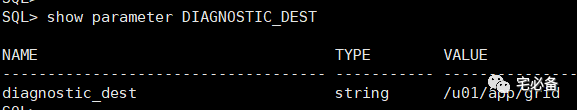
各ASM实例的位置如下:
diagnostic_dest/diag/asm/db_name/instance_name
INSTANCE_TYPE
该参数指定实例的类型，对于ASM来说该值为asm
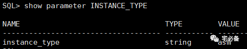
LARGE_POOL_SIZE
该值设定larger pool的大小，启用自动内存管理后无需设置 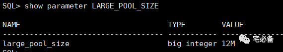
PROCESSES
该值设定最大process数量，启用自动内存管理后无需设置
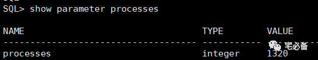
REMOTE_LOGIN_PASSWORDFILE
该值设定ASM登陆是否检查密码文件，这个和Oracle数据库相同
具体查看:
SHARED_POOL_SIZE
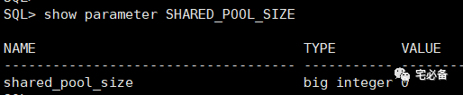
该值设定shared_pool大小,启用自动内存管理后无需设置
3. ASM 磁盘组参数
下面是关于磁盘组的一些参数
-
AU_SIZE
-
COMPATIBLE.ASM
-
COMPATIBLE.RDBMS
-
DISK_REPAIR_TIME
参数讲解将在后面管理磁盘组中说到
好了，这节讲了ASM 实例相关的参数，下节讲ASM实例的管理